PpGショウ in 南町田
パワーパフガールズ☆ライブアクション！
パワパフのきぐるみショーがやるっていうので、行ってみました。
QuickTimeがインストールされてるといいことあるかも。
|
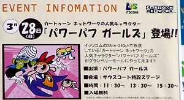 |
第一章：ある晴れた日に
|
南町田なんて駅、初めてきましたよ。グランベリーモールはそんなに大きくはないんだけど、そこそこきもちいいとこでした。別にパワパフショーがあろうがなかろうが、家族づれが多いとこなんでしょう。犬をつれている人が多かったのが印象的でした。でっかいのやら、かわいいのやらいっぱいいてよかったなあ。 って、そんなのはどーでもいいですか、はいそうですか。 この奥が会場です。見えますか？ええ、見えませんとも。 |
|
主催のイッツ・コミュニケーションズのテントです。 このイッツ・コミュニケーションズというのは、ケーブルTV局で、このショーはケーブル加入のための販売促進イベントであるようです。だから、近くにケーブル局がある地域は、もしかしたらガールズのショーが回ってくるかもしれません。地域情報をチェックしとくといいかも。 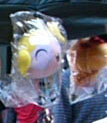ここではアンケートに答えると、液晶テレビやHDレコーダーが当たるというものなんですが、私はその資料のおまけについてくる「PpGモバイルサイトのチラシ」に引き寄せられてアンケートを書いてしましました。地元民じゃないうえに、すでにCSに加入しているやつなんか意味ないだろうに、社員のみなさまどーもすんません。 このテントでは、販売してるわけでもないのに、なぜかいっぱいガールズのぬいぐるみが飾ってありました。そう、それは伏線だったのです。 |
|
待つこと数分。 ちっちゃい子供たちがステージの周りをとりかこんでいます。 裏方の音響のおにいさんに怒られそうだったので、そそくさと退散して、ベストポジションをキープしに移動。 とかなんとかやってると、おねいさん登場。 「みんな～、パワーパフガールズって知ってるかな～！」 「幼稚園児だけど、すっごいパワーをもってる超強力三人娘パワーパフガールズは、どうやって生まれたか知ってる？ （心の中で「ケミカルXだぁぁぁぁぁ！！！」） 「そう、ケミカルXを間違って入れちゃって・・」以下略 「そして今日は・・・」 （いよいよか！いよいよかあああ！！！） |
|
「やあ、みんあこんにちは。」 おまえかよ～！！ 笑ってるんだか、困ってるんだかよくわからん顔です。 「じゃあ、ガールズを呼ぶよ、ガールズ～！」 おおおおおおおおおおおおおおおおおおおおおおおお |
第二章：そしてそこに彼女たちはいた
| 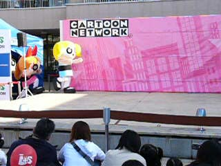 |
ちゃっちゃ ちゃらら ちゃーちゃ。 ガールズ登場！ ドタドタ・・・ってなんとドンくさい登場なんだ。 「私ブロッサム、このリボンかわいいでしょう。うふっ。」 「みんなこんにちは、私バブルス」 「みんな元気～！私は元気。たあ～！」 かわええ・・・ |
|
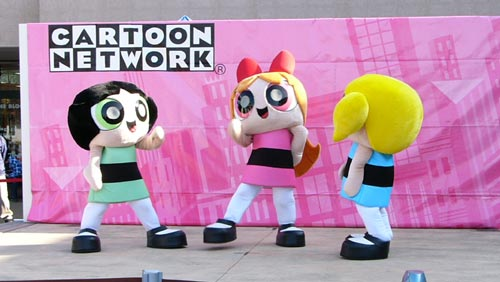 これはある意味新作！いや、新作じゃなくとも、知られざるもう一つのPpGの物語！ |
|
おねいさんをイジメるガールズ。 ぽかぽか。 ウソです。 と言って、ガールズは一時退場。 やっぱり飛ばずにドタドタと・・・ |
|
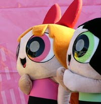 舌がなんか微妙・・・目のとこは反射板みたくなってるのかなあ。なんだろアレ。それとも、空気穴？ |
第三章：そして、そいつはやってきた
|
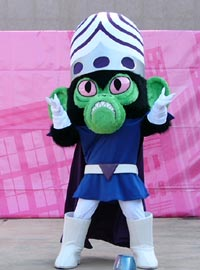 |
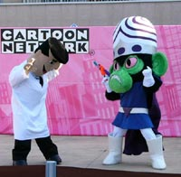 モジョ様登場！ ここでなぜか喝采が。みんな待ってたのね。 「お前は元は私の助手だったじゃないか」と、さりげなく細かい設定を説明するユートニウム博士。 ただ、モジョ喋りは、なし。ここらへんが日本オリジナル脚本の弱みか？ |
|
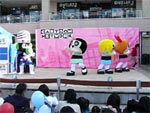 |
ちゃっちゃちゃらららーら。 「あれ博士がいないよ」 「博士は俺様が預かった。取り返したかったら、力ずくでこい」 「おねえさんは、あぶないから逃げてて」 「たあー！」 バターカップ跳び蹴り！ ひらりとよけるモジョ。そして怪しげなビームガンをバターカップにビビビビ。 「さあ、バターカップ、二人をやっつけろ！」 「きゃあああ、やめてええ」 「やめなさい、バターカップ。ぐえ。」 「ああ、あたしのせいじゃない。どーいうことぉ」 「ふはははは、この博士を脅して作ってもらったコントロールマシンでお前を操ったのさ！ 互いに戦うブロとバタ。 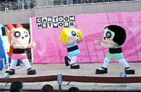 熾烈な戦い！！！！ でもこれは、観客にはこういう風に見えているのです。 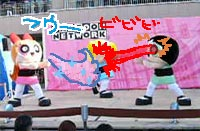 もちろん！私も見えたさ！！ |
|
でまあ、これで、ガールズはがっくり。「もうだめ～」にやや萌え。 ここで、バタカの衝撃発言。 「そんな博士なんかキライ～！」 娘に嫌われても動じない博士「もちろん、ガールズも踊るさ」 Σ(ﾟДﾟ#)＜えっ！ てなわけで、ここでガールズのダンスとなるわけですが、これがけっこう楽しいんだなあ。 しかし、これにはワケがあったのだ！ガールズがステキなダンスをすると、コントロールマシンが壊れるように、あらかじめユートニウム博士は細工してあったのだ！！！！！ |
|
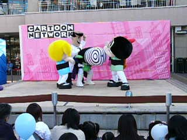 |
で、結局マシンが壊れてガールズは自由に。 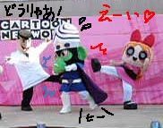 ここ一番もりあがるとこ！ そんなに広くないステージなのに、くるくるとよく動きますな。またもやダンスも混じって、なかなか見応えがありますよ。 モジョも最後には「ったく、むっかつくぜ」のセリフを残して撃沈。これで脳味噌が出てくれれば最高なんだが（笑） |
|
最後にテレ東版の日本語エンディング曲とともに、もう一回ダンス。これもいいです。 博士も踊る。 そして、 今日も街は救われた！ サンキューパワパフガールス！！！ もう完全にネタバレていうか、すっかり書いちゃったけど、これも後の世のための資料として・・・ ていうか、ライブの楽しさは、内容を知っていたからってどうというものではありません。この楽しさは体験したものでないと。 他の場所で見た人らの話を総合すると、どうやらパワパフの寸劇はこの1話だけのようだ。しかも、同じ着ぐるみ。 よくよく調べると、パワパフの着ぐるみはどうも他にもあるようで、そちらは激しいアクションなどない、イベント握手会などで使われるモデル。 |
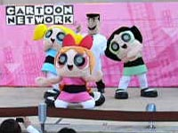 |
第四章：宴の始末
|
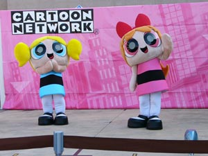 |
「みんなありがとう！」 一段落ついた後は、パワーパフとの握手会です。 しかし、この握手会はすでに配られていた整理券（先着順）を持ったものしか権利はないのだ！！ がーん！！！！ それ、告知しとけよ。 当然ながら、普通に昼とかからショッピングとかに来ていた家族づれの子供たちばかり。いいなあ。 |
|
その合間に、お姉さんが営業トーク。 「パワーパフガールズはイッツ・コミュニケーションズで視聴できます！ 今日、ご加入手続きをなされた方には、もれなくこの【非売品】のパワーパフぬいぐるみをプレゼント！」 テントにいっぱいあったのは、ご加入のおまけグッズだったのですな！ しかし、ここまでパワパフを「売り」にしちゃうとカートゥーンネットワークはどんな状況であれ、パワパフを一時休止とかにはできんだろうなあ。とか思った。 |
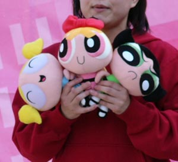 |
|
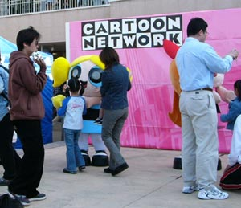 |
順番に子供達が握手してゆく。 ん、デカイと思ったけどそうでもないのか？ 身長160cmくらい？中の人はいったいどんな人なんだろうか？ 「このバブルスなんか汗く～さい。」とか言ってないだろな。まあ、見た感じ、すなおな感じの子が多かったですね。みんな嬉しそうな顔で握手してました。 それを脇で写真をとるパパやママ。 そして、いよいよ最後のほうに・・・・ あああああ、あれは！ |
| おっきなおねいさん!!
うううう、うらやましいいいいいいいいいいいいいいいいいい。子供おしのけて、整理券ぶんどったんですな。 素晴らしい！ 鞄についたブロのアクセサリーが素敵です。 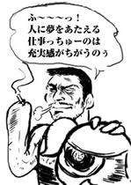すごく嬉しそうでした。よかったね。 急いでデジカメ買ってよかった。しかもデジカメに動画機能がついていてよかった。 とりあえず、中の人がどんなのかは考えないようにしとこう。 |
|

{kind=link}
＞PpGショウin藤沢（湘南フィルモール）のレポートもみる？
さらに、過去のPpG着ぐるみの出現記録をまとめてみた。＞パワパフ着ぐるみの軌跡
参考リンク：
■カメキチ堂
同じショーを見に行った亀吉さんのレポート。（会えませんでしたが）2004/03/29～31のブログ参照
■エヴァラ
府中でのパワパフイベントレポートが「その他」のページにあります。また、こちらのサークルさんの同人誌「パガ」にはパワパフフェスティバルのイベントレポート漫画も掲載されてます。
■ぽてとさらだ
サイト自体は閉鎖しちゃってますが、うれしいことにイベントレポートコンテンツは残ってます。寸劇用のアクション着ぐるみとは違う、もう一つのイベント用着ぐるみを鑑賞できる。違いを見比べてみるのも一興。
■sugar
and spice
こちらも「パワパフレポート」にいくつかイベントレポートあり。